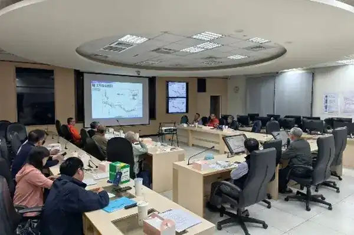
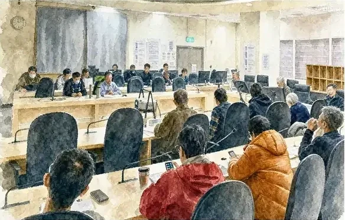

跨界合作論壇
匯聚專業建言，擘劃流域藍圖
定期舉辦公私協力論壇與研討會，匯集水利、生態與社造專家的前瞻思維。
建立資訊公開與雙向交流的治理平台，讓流域管理從單向溝通走向多元共創。
面對極端氣候帶來的挑戰與多元的社會期待，河川治理不再只是公部門單向的工程思維，而是一場需要全社會共同參與的永續實踐。
這是一篇公私協力誌的範例文章，展示跨部門合作、在地工作坊與公私協同治理的具體歷程。

從中央水利部門、地方政府機關，到在地村里幹部、專家學者、民間社團與學校青年，每一次跨界對話，都在為水環境治理凝聚共識。公私協力誌記錄了大家如何建立互信、分享在地智慧，讓水利決策更貼近土地與人民的真實期待。
最了解地方水情演變與聚落需求的，往往是長年居住在水畔的在地鄉親。第三河川分署透過定期召開公民座談會與現場踏查工作坊，主動深入大甲溪、大安溪與烏溪周邊聚落，與里長、農民及社群代表面對面溝通。
在這些工作坊中，地方代表不僅提出防汛維護與水路改善的實際需求，更分享了深厚的水文化記憶與地方生活智慧，為水環境營造注入豐富的人文溫度。

除了在地基層的參與，水利分署更廣泛邀請水利工程、生態景觀、文化資產與社區營造領域的學者專家組成諮詢平台。
透過公私協力研討會、產學合作計畫與企業 ESG 水環境認養機制，導入智慧水情監測、自然解方（Nature-based Solutions）與水文化扎根教育，展現跨領域多元合作的強大綜效。
定期舉辦公私協力論壇與研討會，匯集水利、生態與社造專家的前瞻思維。
建立資訊公開與雙向交流的治理平台，讓流域管理從單向溝通走向多元共創。
公私協力不是單次的活動或形式上的會議，而是一段持續深化、互信共榮的長期夥伴關係。從資訊透明、公眾參與到流域共治，每一步都凝聚著大家對土地與家園的深厚承諾。
本篇範例文章展示了公私協力誌的記錄核心，未來將持續匯整更多民間團體、在地村里與公部門攜手合作的動人成果，共創三川流域的永續美好。
公私協力不是單次的活動，而是一段攜手守護流域未來的長期承諾。